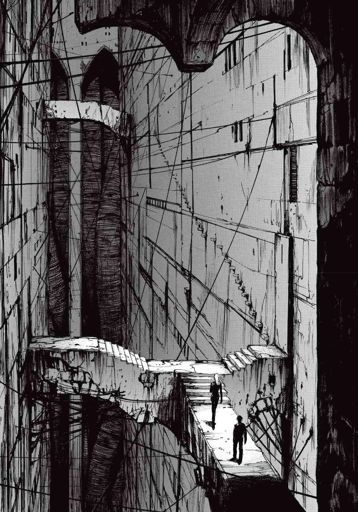
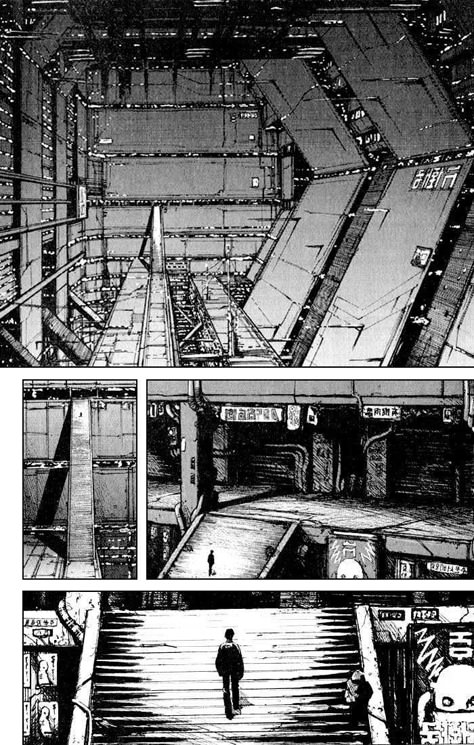

Enter The City

Enter The City
BLAME! is a dark, atmospheric sci-fi manga known for its quiet intensity and stunning, almost haunting artwork. The story follows Killy, a mysterious, almost solitary wanderer searching for humans who still possess something called the Net Terminal Gene. He travels through an enormous, endless megastructure—a world that feels cold, mechanical, and overwhelmingly vast. There's very little dialogue… and that's part of its mood. It makes you feel the silence, the loneliness, the sense of wandering through ruins that once had meaning. As Killy moves forward, he encounters beings that are dangerous, broken, or lost in their own ways. The world itself feels like a character—towering, empty, and yet strangely beautiful.
Endless vertical layers stretching beyond sight. Ancient steel, cracked cables, and forgotten pathways stacked like memories. The walls feel alive—growing, shifting, expanding with a quiet hunger.
Dark corridors where the old network once pulsed. Now only fragments remain… broken screens flickering with ghostly symbols, echoes of a system that lost its purpose long ago.
Silent guardians drifting through the empty halls, scanning for intruders without mercy. Their movements are smooth and unsettling—like shadows that learned how to breathe.
Fragile, scattered, and nearly extinct. Most survivors wander the endless layers of the Megastructure without memory of the old world. Their bodies are human, but their origins are blurred—descendants of countless generations lost inside a city that grows faster than they can understand.
Cold, precise, and relentless. Created long ago to protect the Network, they now act with broken logic—hunting intruders, humans, and anything that does not belong. Their faces are expressionless, their movements eerily silent, like machines that learned how to stalk.
Artificial beings forged from rogue technology, shaped by evolution and conflict. They adapt, rebuild, and grow stronger after every battle. Some are monstrous, some intelligent, all driven by a will that rejects the old system. Their presence is a whisper of rebellion in the steel corridors.
In the quiet depths of the Megastructure, every corridor feels endless and untouched. Players wander through forgotten towers, collapsed data rooms, and haunting steel caverns… never knowing what waits around the next corner. The world doesn't guide you—you uncover it slowly, like peeling back the layers of a dream.
Fights are sharp, sudden, and unforgiving. You face rogue machines, corrupted guardians, and creatures born from abandoned technology. Every encounter feels like a test of instinct—fast decisions, precise timing, and the constant awareness that one mistake can end everything
The city holds secrets in its architecture. Doors sealed for centuries, encrypted terminals, shifting platforms, and pathways that rearrange themselves. Each puzzle feels like interacting with an ancient mind, trying to understand what the world wants from you.
Resources are scarce, allies even rarer. You must manage energy, ammunition, and your own path through hostile zones. Survival isn't just about fighting—it's about staying quiet, learning patterns, avoiding danger, and listening to the echoes of a city that no longer remembers humans.
A devastating high-density energy weapon capable of piercing through layers of the Megastructure with a single blast. Its shots bend gravity itself, folding space for a heartbeat before releasing a beam that tears straight through anything caught in its path. Rare, unstable, and feared by every machine that roams the steel corridors, it is a tool meant only for those who understand the weight of destruction it carries. Using it feels like holding a controlled storm—quiet, intense, and overwhelmingly powerful.